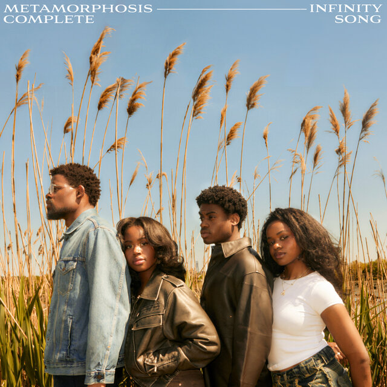

Infinity Song is an American soft rock band composed of siblings Abraham, Angel, Israel and Momo Boyd. Based in New York City, the group has released three albums under record label Roc Nation.
Infinity Song is my favorite band because they have an extremely cohesive sound and they all have beautiful voices. Together they create a harmonious and angelic sound and their heavy hitting lyrics create an enjoyable listening experience.
